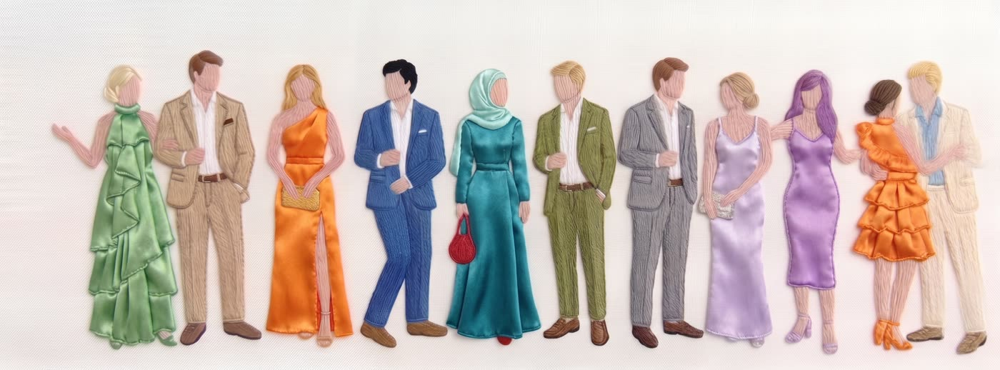

We’re getting engaged
Karim
&
Soha
and we’d love you to celebrate with us
Friday
11 September 2026
Scroll
Welcome!
Every person here has played a big part in shaping our story, and we wouldn’t trade that for the world. Our engagement wouldn’t be the same without you.
When
Friday
11 September 2026
6:00 PMStarts
12:00 AMEnds
What to Wear

Beach formal
Come in color
Satin, floral, bold, or soft; wear whatever makes you feel beautiful, as long as it’s colorful.